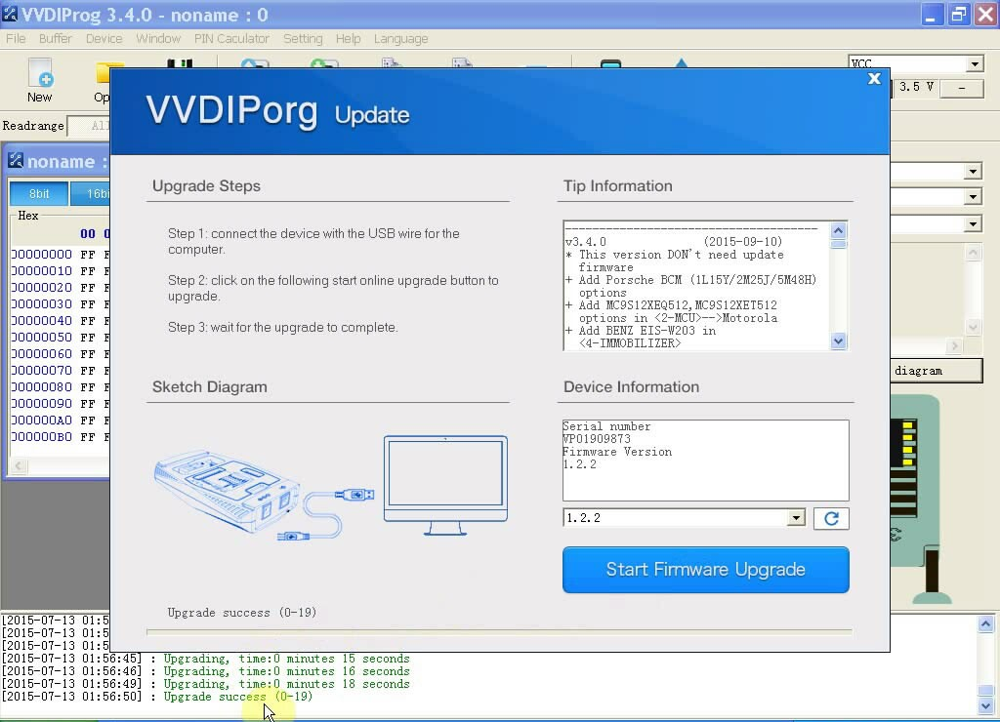
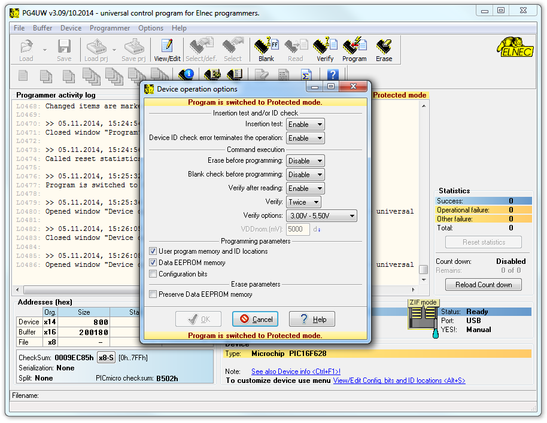

Handbrake
Handbrake
The open source video transcoder
HandBrake is a tool for converting video from nearly any format to a selection of modern, widely supported codecs
Download for Free
Convert video from nearly any format
Free and Open Source video converter
Multi-Platform desktop application
Just a few reason you will love HandBrake

Optimised for easy use
Built-in Device Presets
Get started with HandBrake in seconds by choosing a profile optimised for your device, or choose a universal profile for standard or high quality conversions. Simple, easy, fast. For those that want more choice, tweak many basic and advanced options to improve your encodes.
Modern video formats
Supported Input Sources
Handbrake can process most common multimedia files and any DVD or BluRay sources that do not contain any kind of copy protection.
Outputs
File Containers: .MP4(.M4V) and .MKV
Video Encoders: H.265 (x265 and QuickSync), H.264(x264 and QuickSync), H.265 MPEG-4 and MPEG-2, VP8, VP9 and Theora
Audio Encoders: AAC / HE-AAC, MP3, Flac, AC3, or Vorbis
Audio Pass-thru: AC-3, E-AC3, DTS, DTS-HD, TrueHD, AAC and MP3 tracks

With you in mind
Even more features for you
File Containers: .MP4(.M4V) and .MKV
Title / chapter and range selection
Batch Scan and Queueing of encodes
Support for VFR and CFR
Chapter Markers
Subtitles (VobSub, Closed Captions CEA-608, SSA, SRT)
Constant Quality or Average Bitrate Video Encoding
Video Filters: Deinterlacing, Decomb, Denoise, Detelecine, Deblock, Grayscale, Cropping and scaling
Open Source Licence
Most of HandBrake's source code is covered by the GNU General Public License, version 2. A copy of which is included with every release in the COPYING file. Portions are covered under BSD 3 Clause
Credits
HandBrake uses a lot of (L)GPL or BSD licensed libraries:
A list of these is available here.
Thank their authors!